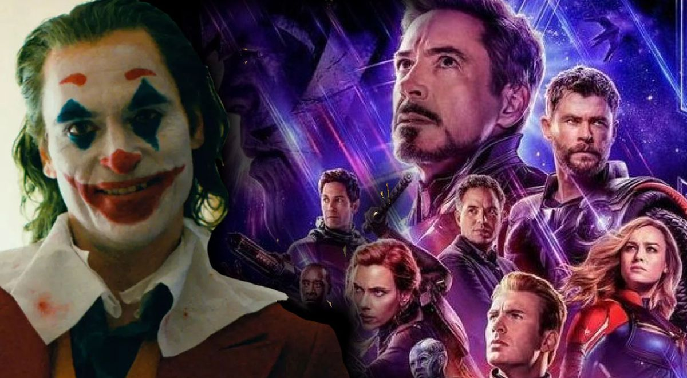
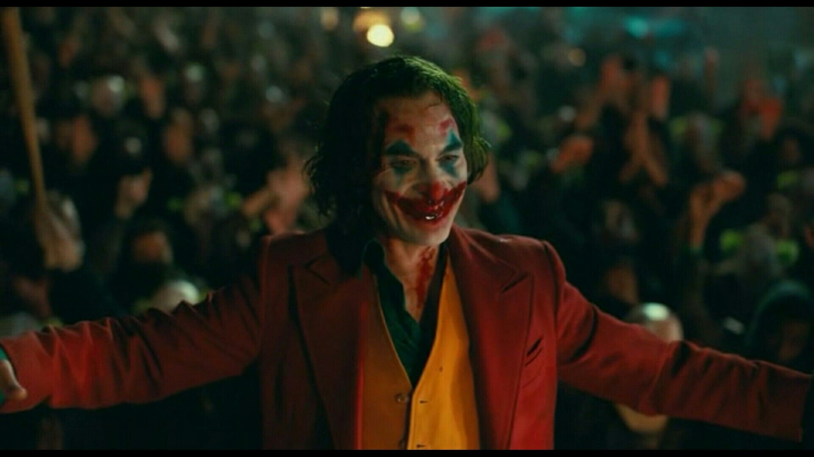

Razones por las que Joker es mejor que Endgame..
Un tema que creo que casi no se toco el año pasado , fue si que película de Superheroes fue mucho mejor, Avengers: Endgame o Joker....y aunque esta comparación tal vez divida mucho a los fans tanto de Marvel como de Dc comics, aquí están mis razones por las cuales Joker es la mejor pelicula de superheroes del año pasado y tambien una de las mejores de la ultima decada.
{kind=link}
Premios y reconocimientos
Desde ya hace unos años las películas del "subgénero"de superheroes a empezado a romper es obstáculo o barrera, que la alejaban de los grandes premios por prejuicios el hecho de ser películas de entretenimiento y comerciales y dejar de la lado temas mas oscuros y serios.'El caballero oscuro' de Christopher Nolan, una de las películas más aclamadas dentro del género, se quedó sin su nominación al Oscar, pero 'Black Panther' de Ryan Coogler, todo un fenómeno social para la comunidad afroamericana en Estados Unidos, sí que consiguió optar (aunque que no se merecía la nominacion y mucho menos ganar ) a la categoría de Mejor Película en 2019. Aunque, sin duda, Joker tiene mas posibilidades que Avengers:Endgame. Sus antecedentes le preceden: el filme ganó el León de Oro a Mejor Película en la pasada edición del Festival de Venecia, convirtiéndose en la primera película de un universo superheroico canónico en conseguir alzarse como gran vencedora de un festival de clase A, habitualmente reservado para un cine de autor más alejado de los mecanismos de la industria. Una sorpresa que la colocaba directamente en la carrera por los Oscar.
{kind=link}
Taquilla
Mucha gente estará pensando que por que Endgame haya sido la pelicula mas taquillera de la historia (Que en realidad la mas taquillera es.. Lo que el viento se llevo (1939) con una taquilla de $3 728 000 000 por ajuste de inflación) no significa que Joker se quede atrás. La película de los hermanos Russo se coloca (y con bastante diferencia) como la más taquillera del año pasado en todo el mundo, con cerca de 2.800 millones de dólares. Le sigue 'El rey león' a una distancia de más de mil millones. Joker, por su parte, queda en un séptimo puesto, superando la barrera del 'billion' pero sin conseguir ascender más en una tabla que cuenta con mejores recaudaciones globales de 'Toy Story 4', 'Aladdin' o incluso 'Spider-Man: Lejos de casa', la tercera de las películas que Marvel ha estrenado en este 2019. Todas ellas, en el top 10 de la taquilla mundial. 'Vengadores: Endgame' contaba con un presupuesto de 356 millones de dólares y un elenco henchido de estrellas provenientes de otras tantas y exitosas películas de la franquicia, 'Joker' ha construido su éxito sobre el legado de un personaje muy querido (eso sí), un planteamiento completamente diferente y un presupuesto de "tan solo" 55 millones de dólares. La rentabilidad de la película de Todd Phillips es algo que no puede ponerse en duda, con una apuesta que, podría decirse, era mucho más arriesgada que cualquiera de las que ha venido haciendo Marvel en su mastodóntico plan de entretenimiento.
{kind=link}
Critica y polémicas
Mientras Endgame se centro en darle una épica y emotiva a sus personajes ,que encontraban su catarsis fílmica después de una década de películas, 'Joker' no hacía más que meterse en polémicas.. Es algo que, por otra parte, lleva escrito en su ADN: la conversión de Arthur Fleck en el Joker está marcada por las enfermedades mentales, la lucha de clases y los ecos a la comunidad violenta de los Incel. Destacan, sobre todo, el error de relacionarla con la violencia, que "fomenta el estigma y el miedo" hacia ella. "La condición grave de salud mental, como las enfermedades psicóticas, son constantemente tergiversadas y mal entendidas", escriben.En definitiva, no ha habido aspecto en 'Joker' que no haya sido sometido a examen y posterior polémica. Es una de las películas más divisivas del año (de ahí su nota en Rotten Tomatoes, a pesar de su incontestable éxito), pero... ¿No están las películas para provocar debate y reflexión? ¿Tiene eso más valor que el entretenimiento puro e impecable de 'Vengadores: Endgame'? ¿Es mejor una película que vive en el mundo real, que explora los problemas que ocasiona el capitalismo salvaje y capta el clima político de hoy, u otra que batalla en una Guerra del Infinito, donde se exhibe una épica multitudinaria como jamás la habíamos visto en la gran pantalla.
{kind=link}
Ninguna es perfecta
verdad es que no sabia si incluir esta parte,por que tengo que admitir que estas dos películas no son lo mejor como tal. Avengers Endgame es tal vez muy pero muy épica pero que es totalmente aburrida casi el 75% de la película.Todo ese 75% es totalmente relleno por que no hay algo que sorprenda o algo que sea totalmente para película (lo único tal vez fundamental es la búsqueda de las gemas) que hizo que el final sea técnicamente lo único bueno ...ah y otra cosa es la participación de Capitana Marvel que no hizo nada ni aporto nada importe a la trama mas allá de horrible personalidad y su gran arrogancia que hace que sea un personaje odiado ...algo curioso es que comparte tal vez esa misma personalidad con la actriz que le da vida Brie Larson (Les dejo abajo un vídeo donde se explica mas a detalle).
Por parte de Joker lo único que pienso que afecta la película es su su plagio de las películas de Martin Scorsese como Taxi Driver o El rey de la comedia....que hace que Joker sea mas una versión de estas pero con un toque Superheroico. Que hace que piense que sin la maravillosa actuación de Joaquin Phoenix , allá terminado siendo una pelicula sin chiste y mediocre.
¿Quien gana?
Realmente tengo que admitir que las dos son muy buenas películas y que las dos tienen dos fines diferentes al igual que diferentes tonos cinematográficos y sociales.Se pude decir que tal vez una es mejor que la otra...no,pero la verdad si tuviera que elegir una película y que de verdad "tiene" todo lo que una película necesita para ser una obra maestra es: Joker lo mejor de lo mejor de DC y también en la carrera de Joaquin Phoenix que le valió totalmente el Oscar a mejor actor.